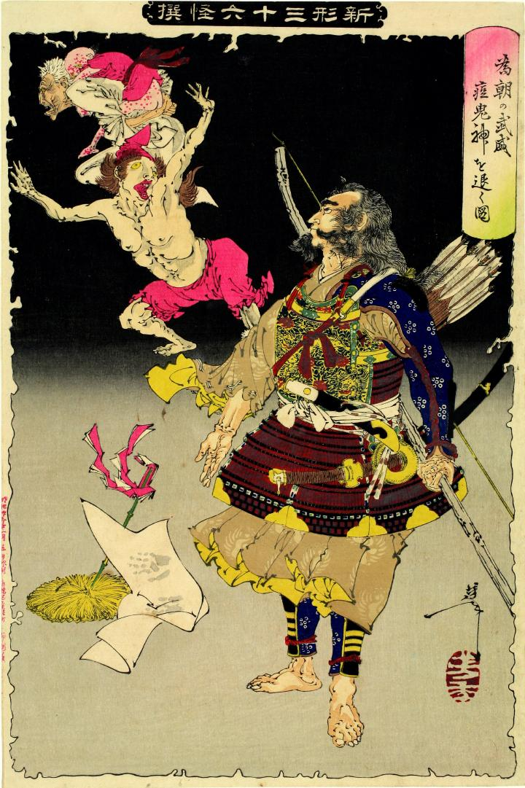

源為朝が、3体の痘鬼神を退散させている。彼の足元には藁に立てた赤い幣と、痘鬼神たちの手形が押された紙がある。手前の痘鬼神は上半身裸で、両腕を広げ後ずさっている。その後ろには白装束の老人の様な痘鬼神がおり、坊主頭で子供の様な痘鬼神を背負い逃げている。子供の痘鬼神の肌は桃色で、赤い発疹がある。
著作者：芳年／出典：親書誌：U426_nichibunken_0067：為朝の武威痘鬼神を退く図；タメトモノブイモガサキシンヲシリゾクズ／日付：2005／資源識別子：U426_nichibunken_0067_0001_0000
Copyright (c)2010- International Research Center for Japanese Studies, Kyoto, Japan. All rights reserved.